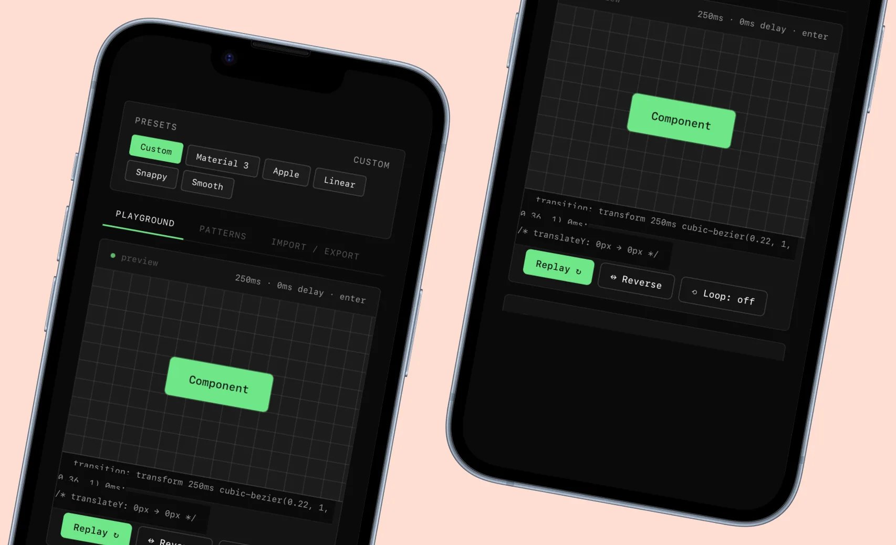

Motion Tokens Generator
Define duration, easing, delay and properties as W3C design tokens and export them to Figma, so motion becomes part of the token system too.
 v0.2
v0.2
The problem
Design tokens are now the usual way to share design decisions between Figma and code: colors, typography and spacing, all versioned. Motion usually isn't part of it. Most teams pick easings and durations case by case instead of treating them as part of the system.
I built the Motion Tokens Generator for that. You define your motion values once, export them as W3C-style design tokens and use them in Figma, code and documentation.
How it works
The tool gives you four primitives: duration, easing, delay, and properties. You combine them into named tokens (for example "ease-out-fast" = 200ms cubic-bezier). Each token has a live preview, so you see what 200ms ease-out looks like instead of reading a number.
Export options include W3C Design Tokens JSON for engineering and a direct Figma plugin export. It's a single page that runs in the browser, with no sign-up.

Interface previewWhere it is now
Currently at v0.2 with the playground bug fixed and translateY/X/scale support. Next iteration will add motion path tokens and reduced-motion-aware variants.
More experiments.
Previous and next in the order of the home page.